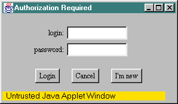
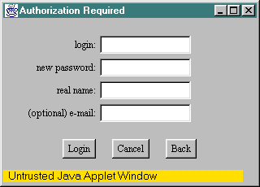
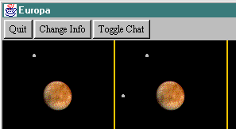
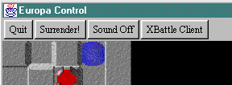
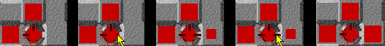
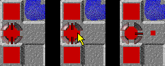
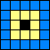
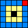

|
|
Controls The following document outlines the controls and user interface of Europa, from logging in for the very first time, to controlling your nanobots on the surface of the Jovian moon. When you first load Europa, you are presented with a dialog box that allows you to log in as an existing character, or create a new character. The dialog looks similar to:  The "login" field is how your character will be seen by others in the game. It can be your name (Sally, John, Chris), or it can be something a little different (Firefly, Gargamel, Warthog). Your password prevents others from easily logging in as your character and ruining (or helping) your rating in any way. If you have an existing character on this server, you can just enter the login and password and click on the "Login" button. If you change your mind and don't wish to play (hopefully not), then you can click cancel which will shut down the applet. If you are new to Europa, or are new to this particular server, then you will have to create a new character. You do this by clicking the "I'm new" button. You will then be presented with the following dialog box:  In this dialog box, you can invent a new "login" name, and protect your character from being played by others by entering (and remembering) a password. Passwords are not encrypted for security so please do not use a password that you are already using for another system. You should enter your real name in the "real name" field, and you can optionally add your e-mail address as well. When you have completed filling out the form, you can press "Login" to join the game with your new character. You can also press "Cancel" to stop the applet, or "Back" to take you back to the first dialog box for players with existing characters. After successfully logging in, the game selection board appears. The following is a clipping of the top left hand corner of the board, in which there are several buttons:  Pressing the "Quit" button will close down the client. Pressing the "Change Info" button brings up a dialog box similar to the character creation dialog box, allowing you to change information about your character (except the login name). Pressing the "Toggle Chat" window creates a text window with an edit control along the bottom. The chat window allows characters to 'chat' with each other before, during and after playing a game. Players say something by typing in the edit control in the bottom of the window. When they hit enter, the message is distributed to all of the open chat windows of all the players, prefixed by the name of the character who is speaking and a colon. The game selection board allows characters to join and quit games by moving the mouse over a cell in the grid and clicking in it. There are four columns of four game types: 2 player games, 3 player games, and 4 player games. Each "game" is signified by a cell in the grid containing an image of the Jovian moon Europa and the number of battling satellites orbiting the moon. Clicking on a moon with 2 satellites will place you in the queue for that 2 player game. When another player joins that game, a game board will be loaded and presented to you. Similarly, if a character selects a three player game, he or she will have to wait for two more players to join before a game will actually begin. When the game begins, a new window appears: that window presents the satellite images to you and also collects commands from you to send to the nanobots on the surface of the moon. The top left hand corner of the window looks similar to:  The "Quit" button quits and destroys this particular game client. The "Surrender" button removes you from the remainder of that particular game, but allows you to watch the rest of the game being played without any horizon (i.e. you can see the entire board)--but you cannot control any troops you may have remaining). The "Sound On/Off" button allows you to toggle sound on and off. The "Europa/XBattle Client" button allow you to toggle between the default "Europa" client look and a less graphically intensive "XBattle" look. If the architecture you are running on is a little graphically pokey, you may want to use the Xbattle client. Note that "Sound On/Off" and "Europa/XBattle Client" state information is saved with your character so that it will come up by default every time you play. Mastering the controls of Europa is the first step along the road of success. It is absolutely crucial to be comfortable with the commands, and that can only come with practice, practice, practice. Because of the variety of different mouse hardware available in the world, we will use the following protocol when describing mouse buttons: mouse button 1 refers to the leftmost button on the mouse and increasing numbers refer to subsequent buttons moving from left to right. On mice with only one button, it is assumed to be button 1.
Mouse Button 1 - Toggle Pipe Mouse Button 2 - Create Mutually Exclusive Pipe Alt/Command - Duplicates Mouse Button 2 when used with Mouse Button 1 i, j, k, l - Create north, west, south and east pipes respectively space - Clear all pipes p (or h) - Launch Paratroopers g (or o) - Fire Guns 0-9 - Set Reserves
Mouse Button 1This control is used to toggle a single pipe. If a player moves the mouse over a particular geographic region in a cell (north, east, south or west) and clicks mouse button 1, then the pipe in that region will be toggled. In other words, if the pipe does not exist, it will be turned on; if the pipe already exists, it will be turned off. For example:  The above sequence show the red player moving over the eastern region in one of the cities and clicking with mouse button 1 (frames 1 and 2). Since a pipe does not exist in the eastern region, one is created and troops immediately begin moving into the adjacent cell (frame 3). The player then moves the mouse back over the eastern region of the city and clicks with mouse buttons 1 again (frame 4). The pipe is then removed (frame 5). Mouse Button 2This control is used to select a mutually exclusive pipe for a cell. This means that when the player clicks on a region of a cell, a pipe is created in that region and all other pipes which exist in that cell are removed. For example:  The above sequence shows the red player moving over the eastern region of one of the cities and clicking with mouse button 2 (frames 1 and 2). An eastern pipe is created in the cell and all other pipes (the north and south ones) are removed (frame 3). Alt/CommandThe Alt/Command key on the keyboard in conjunction with mouse button 1 acts as an alternative to mouse button 2. In other words, Alt/Command + mouse button 1 will issue the same command as mouse button 2 in isolation. For architectures with single button mice, this interface must be used in place of the mouse button 2 command. i, j, k, lThese keys are alternatives to mouse button 1, with a slight twist. If a player moves into a cell they occupy, they can use i, j, k, or l to create a pipe in a particular direction without the requirement of actually being over that region of the cell. The j key creates a western pipe, the k key creates a southern pipe, the i key creates a northern pipe and the l key creates an eastern pipe. These keys can also be used in conjunction with the Alt/Command key to access the mutual exclusive pipe creation. spaceThe space bar is used to clear all of the vectors in a cell. p (or h)The p key throws paratroopers from the source cell (the cell where the mouse cursor is located) to a destination cell. The direction and distance the troops are thrown depends on where the mouse cursor is located inside the source cell. The following diagram illustrates the concept:  Imagine the above diagram represents a single cell on the game board, the source cell from which you intend to fire a few paratroopers. The subcells inside this diagram represent a localized map of the game board where the black subcell represents the cell you are located in, the yellow ring represents the cells immediately surrounding the source cell and the blue ring represents the cells two units away (this is the maximum range of the paratroopers). Selecting the destination cell is simply a matter of moving the mouse cursor into the correct location in the "map" in the source cell. For example:  moving the cursor into the red subcell of this cell would throw paratroopers two units north and two units east. The 'h' key is provided as an alternative to 'p' so that you can easily reach it while simultaneously having another finger on the 'g' key ready to fire guns. Alternately, the 'o' key is an alternative to 'g', in case you are using an "ergonomic" keyboard. g (or o)The g key operates guns from the source cell (the cell where the mouse cursor is located) to a destination cell. The destination cell is determined identically to the method described in the section on paratroopers (above). Gunning a cell just before paratrooping into it is a good tactic, so be sure to use one of the alternates for either guns or paratroops that let you keep your gunning and paratroop fingers comfortably close together. 0-9The number keys (0 through 9) allow you to control how many troops are required to remain in a square as reserves. The percentage of troops that stay in the cell is 10x the key pressed, and is briefly displayed in the cell when you set the reserves. The purpose of reserves is to defend the square against a possible paratroop or gun attack that might otherwise take over your space before you even knew an attack was in progress. For this reason, reserves are a great favourite on cities, but be careful, as setting a high reserve percentage on your city can stop your early game exploration.
Background - Objectives & Rules - Controls - Strategy - The Rating System - Club 75 - Credits - Log In & Play Produced by Alex Nicolaou and Jay Steele Java and other Java-based names are trademarks of Sun Microsystems, Inc., and refer to Sun's family of Java-branded technologies. |